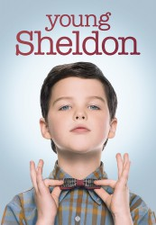

")
 
 IMDB-Wertung: 7.2 / 10
IMDB-Wertung: 7.2 / 10  Metascore:
Metascore: 
Das neunjährige Genie Sheldon Cooper wächst in Ost-Texas bei einer sehr wertekonservativen Familie auf. Seine Mutter Mary hält die Bibel in hohen Ehren und folgt einer wörtlichen Auslegung, was im Laufe der Zeit stark mit Sheldons wissenschaftlicher Weltsicht kollidiert. Außerdem im Haus: Sheldons Vater George sowie seine Zwillingsschwester Missy und der ältere Bruder George Jr.
Jahr: 2017
Dauer: 20 Minuten
FSK:
Land: USA Studio: CBSTonspuren: DD2.0 - ,
Untertitel:
Auflösung: 720p (1280x720) Größe: 459 MB
Regisseur: Howard Deutch, Michael Zinberg, Mark Cendrowski,  Jon Favreau, Chris Koch, Peter Lauer, Jaffar Mahmood, Don Scardino, Rebecca Asher, Richie Keen
Jon Favreau, Chris Koch, Peter Lauer, Jaffar Mahmood, Don Scardino, Rebecca Asher, Richie Keen
Drehbuch: Chuck Lorre
Soundtrack:
Darsteller:
 Jim Parsons als Sheldon 14 episodes, 2017-2018
Jim Parsons als Sheldon 14 episodes, 2017-2018 Annie Potts als Meemaw 12 episodes, 2017-2018
Annie Potts als Meemaw 12 episodes, 2017-2018 Valerie Mahaffey als Ms. MacElroy 5 episodes, 2017-2018
Valerie Mahaffey als Ms. MacElroy 5 episodes, 2017-2018 Brian Stepanek als Mr. Givens 4 episodes, 2017-2018
Brian Stepanek als Mr. Givens 4 episodes, 2017-2018 Rex Linn als Principal Petersen 3 episodes, 2017-2018
Rex Linn als Principal Petersen 3 episodes, 2017-2018 Sarah Baker als Ms. Hutchins 2 episodes, 2017-2018
Sarah Baker als Ms. Hutchins 2 episodes, 2017-2018 Bob Newhart als Professor Proton 1 episode, 2017
Bob Newhart als Professor Proton 1 episode, 2017 Ray Liotta als Vincent 1 episode, 2017
Ray Liotta als Vincent 1 episode, 2017 Frances Conroy als Dr. Flora Douglas 1 episode, 2018
Frances Conroy als Dr. Flora Douglas 1 episode, 2018 Billy Gardell als Herschel Sparks 1 episode, 2018
Billy Gardell als Herschel Sparks 1 episode, 2018 Jason Kravits als Dr. Ronald Hodges 1 episode, 2017
Jason Kravits als Dr. Ronald Hodges 1 episode, 2017 Harry Groener als Elliot Douglas 1 episode, 2018
Harry Groener als Elliot Douglas 1 episode, 2018 Brandon Morales als Referee 1 episode, 2017
Brandon Morales als Referee 1 episode, 2017 Caitlin Carmichael als Veronica 1 episode, 2018
Caitlin Carmichael als Veronica 1 episode, 2018 Richard Kind als Ira Rosenbloom 1 episode, 2018
Richard Kind als Ira Rosenbloom 1 episode, 2018 Wiley M. Pickett als FBI Agent #1 1 episode, 2017
Wiley M. Pickett als FBI Agent #1 1 episode, 2017 Phil Morris als One 1 episode, 2018
Phil Morris als One 1 episode, 2018Datei: X:\HD-Serien\Young Sheldon S01\Young Sheldon S01E01 Sheldon Newton und Euklid.mkv seit 20.02.2018
Festplatte: HD Serien(SU-Z)+Dokus+Musik
 Es gibt insgesamt 182 Filme in der Gruppe 'HD-Serien'
Es gibt insgesamt 182 Filme in der Gruppe 'HD-Serien'